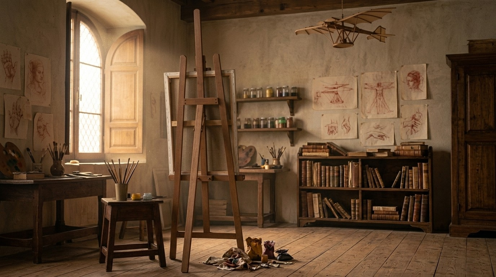

I The sitter
Carlos Yajie Fetizanan, a student of Information Technology, majoring in Business Analytics, at Batangas State University.
Carlos Yajie Fetizanan Batangas · Philippines
I build machine learning models and design the interfaces people use them through. Currently interning at the Center for Artificial Intelligence and Smart Technologies, Batangas State University.
Folio I · Memory lane
The sitting is over and the room is quiet. Every object here keeps a memory of the work. Select one to step inside it.

Away from the screen I draw, mostly portraits in graphite. They stand in the rack the way finished canvases waited in a Florentine workshop. Pull one out to see it up close.
Inventions, the modern kind. A few chosen projects first, then the full ledger, read live from my GitHub.
Every certificate is a book I finished. The ones on this shelf with a seal are mine, each stamped with its badge from Credly. Take one down to read its cover, or choose a skill below to see which books taught it.
Every stroke, under pressure.
Folio II
I'm Yajie, an IT student at Batangas State University majoring in Business Analytics. I like finding the pattern hiding in a messy dataset, then designing something clear enough that anyone can act on it.
Certificates are on the bookshelf.
Folio III
Tell me about the project and I'll get back to you. Prefer email? Write to cyfetizanan@gmail.com
Answers come from this portfolio